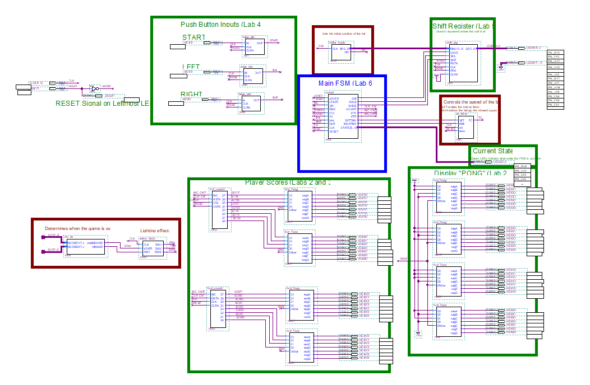
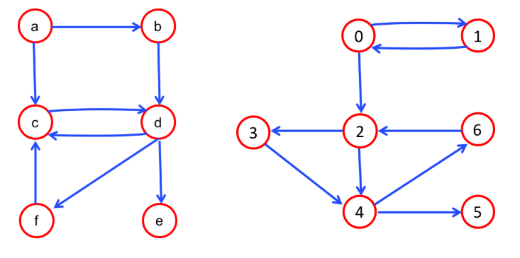

Hardware
FPGA Atari PONG
A hardware implementation of the classic Atari PONG game developed using an FPGA. The project involved designing the game logic and implementing the system in hardware.
Technology: Verilog, FPGA
Here are some of the projects I have completed through coursework, research, and personal interests.

Hardware
A hardware implementation of the classic Atari PONG game developed using an FPGA. The project involved designing the game logic and implementing the system in hardware.
Technology: Verilog, FPGA

Software
A software project focused on exploring and navigating graph structures. The project provided experience with data structures, algorithms, and object-oriented programming.
Technology: Java

Software
Implemented and evaluated neural networks for classification problems, including experiments with multilayer networks and decision boundaries.
Technology: Java, Neural Networks, Machine Learning